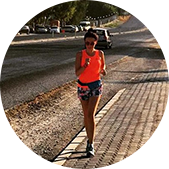

Nos collaborateurs sont toujours prêts à partager leur expérience, parce qu'ils courent eux-mêmes des semi-marathons, traversent le Bosphore à la nage et se préparent pour des compétitions de triathlon !
Nous nous soucions de la santé
Nous travaillons pour pour que vos activités sportives soient bénéfiques pour votre santé et apportent de la joie à vous et à vos proches !
Apprendre à courir
Nous aidons à la formation bonne technique de course ! Nous sommes amis avec la plus grande école de course à pied de Russie - I LOVE RUNNING.
Obtenez une consultation gratuite sur la sélection d'un moniteur de fréquence cardiaque
Remplissez simplement le formulaire de candidature et nous vous rappellerons dans 10 minutes
Catalogue des cardiofréquencemètres
le fitness
la course
le triathlon
Cardiofréquencemètre Polar FT1
Pour les premiers pas de l'entraînement basé sur la fréquence cardiaque
Je ne savais pas quoi acheter pour moi, alors je me suis tourné vers les gars de RunSmart - ils ont sélectionné un moniteur de fréquence cardiaque qui convenait à mes objectifs et à mes capacités financières. Après un certain temps, j'ai décidé de mettre à jour le gadget - j'y suis allé sans hésiter.
Nouveaux objectifs - nouveau gadget !
Merci, RunSmart!
Ivan Syomochkine
1 semi-marathons
Chose cool - un moniteur de fréquence cardiaque. Je courais habituellement sans eux. Il s’avère que je n’ai fait qu’empirer les choses pour moi-même. J'ai acheté un moniteur de fréquence cardiaque et j'ai reçu une séance d'entraînement en cadeau. Ils ont organisé ma première séance de formation ensemble et m'ont appris à utiliser un nouveau gadget. Ils ont également expliqué les bases de l'anatomie et élaboré un plan d'entraînement pour le mois à venir.
J'ai préparé mon premier semi-marathon avec eux ! Merci!!!

Ioulia Dashkina
2 semi-marathons
Il m'a fallu beaucoup de temps pour commencer à courir parce que... J'ai commencé plusieurs fois auparavant, mais c'est devenu difficile et j'ai arrêté. J'ai entendu parler de RunSmart et de la course à pied avec contrôle de la fréquence cardiaque par des amis et j'ai décidé de l'essayer.
J'ai appelé, les gars m'ont posé des questions sur mes objectifs et ont trouvé une option très intéressante avec une réduction ! Maintenant, je cours et j'aime courir ! J’ai déjà couru 2 semi-marathons et plusieurs courses plus courtes et je ne compte pas m’arrêter !
Merci!!!
×
Remplissez simplement le formulaire de candidature
et nous vous rappellerons dans 10 minutes
×
Votre commande:
Cardiofréquencemètre Polar FT1
×
Merci pour votre soumission !
Notre responsable vous contactera dans le futur proche!


Nouveaux objectifs - nouveau gadget !
Merci, RunSmart!
J'ai préparé mon premier semi-marathon avec eux ! Merci!!!
J'ai appelé, les gars m'ont posé des questions sur mes objectifs et ont trouvé une option très intéressante avec une réduction ! Maintenant, je cours et j'aime courir ! J’ai déjà couru 2 semi-marathons et plusieurs courses plus courtes et je ne compte pas m’arrêter !
Merci!!!